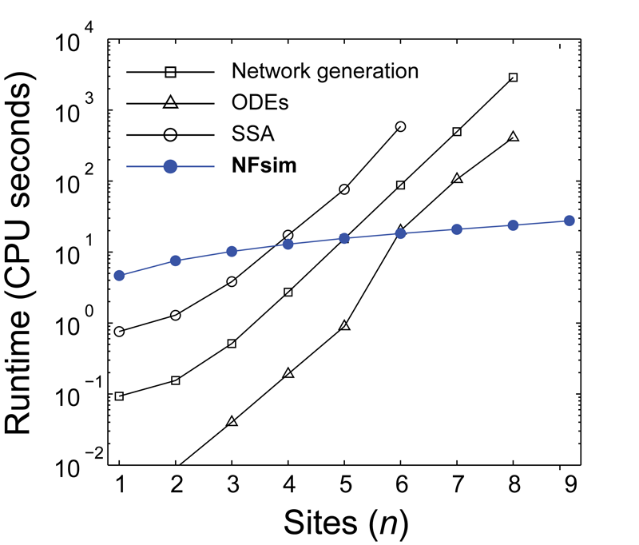
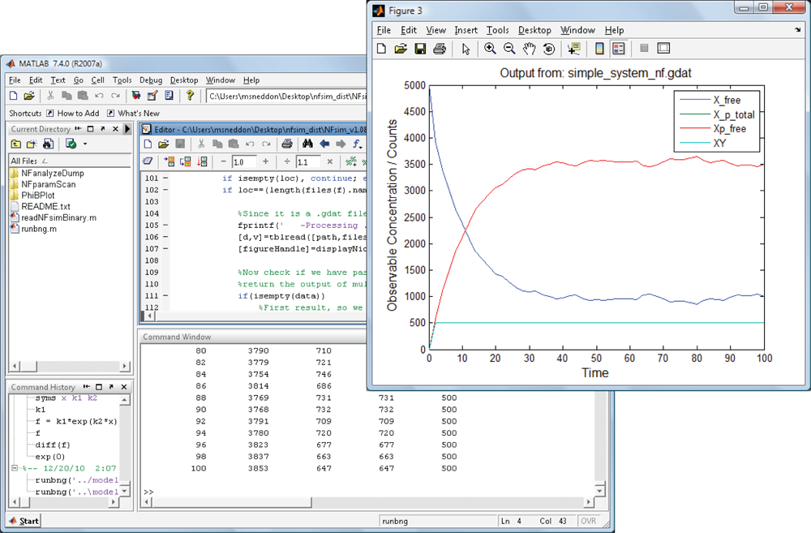

|
Key Features
- Efficient simulation of large, complex, biochemical reaction networks
- Efficient tracking of large molecular complexes that can aggregate or polymerize
- Advanced coarse-graining capabilities to simplify reaction mechanisms
- Straight-forward specification of models with BNGL
- Seamless operation with BioNetGen, allowing ODE and SSA simulation
- Scripting language for changing parameters and rates mid-simulation
- Interactive model debugger to track events as they occur
- Comprehensive output options, allowing, for instance, single molecule tracking
- Includes Matlab-based post-run functions and scripts for rapid visualization and analysis of models and simulations
- Includes Matlab-based parameter scanning and estimation utilities
- Object-oriented, documented, and resusable software design to support 3rd party extensions by modelers or developers
- In-depth user-manual with a suite of example models you can use to start your project
- Tested and compiled for Windows, Mac, and Linux
- 100% free and open source (under GNU General Public License)
|  |
High performance simulation of complex biochemical reaction networks
The runtime performance of NFsim scales with the number of biochemical rules in a model,
not with the total number of reactions or molecular configurations. Therefore, NFsim can often
simulate complex biochemical models faster than the Gillespie algorithm (SSA) of even ordinary differential
equations (ODEs). As the detail of a dynamic model is increased (shown in the graph to the left by
increasing the number of phosphorylation sites of a protein), NFsim performance exceeds both ODEs and the SSA.
|
|
|
Coarse-graining complex reaction mechanisms
It is often necessary to include approximations or simplifications in a model due to
a lack of information or because it is too costly to simulate all of the molecular details. NFsim supports the definition of
reaction rates as arbitrary mathematical or conditional expressions defined in terms of the state of the system
or of individual molecules, allowing you to easily incorporate complex biochemical approximations
such as cooperativity.
|
|
|
|  |
Suite of Matlab-based analysis utilities
NFsim includes a documented set of Matlab-based scripts and functions to
help in analyzing models, visualizing results, and extracting data from simulations. With these tools,
you can automatically vary parameters to help with sensitivity analysis, extract the molecular connectivity
of large aggregates or polymers, or use these functions to track single molecules in your system.
|
|
|
Full integration with BioNetGen
NFsim is integrated with BioNetGen so that many of the models written for NFsim
can be immediately simulated with ODEs or the SSA by just adding a single line to your model file.
With this capability, you'll be able to immediately tell which method can simulate your system the fastest
and, when possible, compare stochastic and deterministic results. For some models that have limited
numbers of reactions or states, you can even use BioNetGen to export your model to SBML. The goal is to
allow you to write a single model, then choose how exactly how you want to simulate it.
|
|
|
|